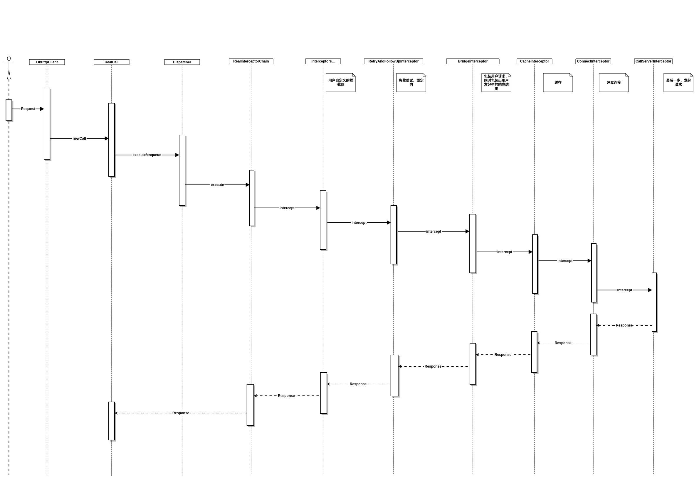

简介
本文通过结合OkHttp源码,分析发送请求的大致流程。
- 本文源码基于3.12.0版本
示例
首先我们创建一个最简单的请求，以此为例开始进行分析
|
|
流程
1.1 创建请求
|
|
首先使用建造者模式构建一个Requst,来插入请求的数据。
1.2 封装请求
请求封装在了接口Call的实现类RealCall中：
1.3 执行请求
请求分为同步请求和异步请求:
同步请求:
12345678910111213141516171819202122public Response execute() throws IOException {synchronized (this) {if (executed) throw new IllegalStateException("Already Executed");executed = true;}captureCallStackTrace();timeout.enter();eventListener.callStart(this);try {client.dispatcher().executed(this);Response result = getResponseWithInterceptorChain();if (result == null) throw new IOException("Canceled");return result;} catch (IOException e) {e = timeoutExit(e);eventListener.callFailed(this, e);throw e;} finally {client.dispatcher().finished(this);}}异步请求:
12345678910public void enqueue(Callback responseCallback) {synchronized (this) {if (executed) throw new IllegalStateException("Already Executed");executed = true;}captureCallStackTrace();eventListener.callStart(this);client.dispatcher().enqueue(new AsyncCall(responseCallback));}
从上面可以看到不论是同步请求还是异步请求都是在Dispatcher中进行处理，
区别在于：
- 同步请求：直接执行executed，并返回结果
- 异步请求：构造一个AsyncCall，并将其加入到readyAsyncCalls这个准备队列中
|
|
AsyncCall继承自NamedRunnable，而NamedRunnable可以看成一个会给其所运行的线程设定名字的Runnable，Dispatcher会通过ExecutorService来执行这些Runnable。
1.4 请求的调度
|
|
请求的调度主要在Dispatcher类中进行，其中维护了3个双端队列：
- readyAsyncCalls:准备队列用于添加准备执行的异步请求。
- runningAsyncCalls：正在执行的异步请求队列。
- runningSyncCalls：正在执行的同步请求队列。
对于同步请求，Dispatcher会直接将请求加入到同步请求队列执行；对于异步请求首先会将请求加入readyAsyncCalls中，接下来会遍历readyAsyncCalls判断如果当前执行的异步请求数量小于65并且同一host下的异步请求数小于5，则将readyAsyncCalls中的请求加入到runningAsyncCalls开始执行并从readyAsyncCalls中移除。
1.5 请求的执行
|
|

可以说okhttp最核心的部分就是拦截器的这部分，这里采用责任链的设计模式，使各个功能充分解耦，各司其职，请求从用户自定义的拦截器开始层层传递到CallServerInterceptor，每层做出相应的处理，直到请求发出，与此同时，返回的响应从CallServerInterceptor开始逐层上传直到用户的自定义拦截器，每层都会对返回的响应做出相应处理，最终将处理好的响应结果返回给用户。